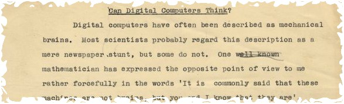

അലന് ട്യൂറിങ്ങ്
സന്തോഷ് തോട്ടിങ്ങല്
ഇരുപതാം നൂറ്റാണ്ടിലെ വിപ്ലവകരമായ ഒരു കണ്ടുപിടിത്തമായിരുന്നു കമ്പ്യൂട്ടറുകളെന്നതു് തര്ക്കമില്ലാത്ത വസ്തുതയാണു്. ജീവിതത്തിന്റെ സമസ്തമേഖലകളിലെയും സ്പര്ശിച്ചു കൊണ്ടു് അതിവേഗത്തിലുള്ള നവീകരണത്തിന്റെ പാതയിലാണു് കമ്പ്യൂട്ടര് സയന്സ്. മനുഷ്യമനസ്സിനെ ഒരു യന്ത്രത്തിലേയ്ക്ക് പകര്ത്താമോ, അതിനെ മനുഷ്യബുദ്ധിക്കു സമാനമായ കഴിവുള്ളതാക്കിമാറ്റാമോ എന്ന അന്വേഷണത്തിന്റെ ആദ്യത്തെ വിജയകരമായ ഉത്തരങ്ങളാണു് കമ്പ്യൂട്ടറുകളായി നമ്മുടെ ജീവിതത്തില് ഇടം പിടിച്ചിരിക്കുന്നതു്. ഈ അന്വേഷണത്തിന്റെ ചരിത്രം അന്വേഷിക്കുന്ന ആര്ക്കും അലന് ട്യൂറിങ്ങ് അസാമാന്യ ശാസ്ത്രപ്രതിഭയെ മറക്കാനാവില്ല. പ്രസിദ്ധ ഗണിതശാസ്ത്രജ്ഞന്, കമ്പ്യൂട്ടര്സയന്സ്, ആര്ട്ടിഫിഷ്യല് ഇന്റലിജന്സ് എന്നിവയുടെ പിതാവു്, രണ്ടാംലോക മഹായുദ്ധകാലത്തെ രഹസ്യസന്ദേശങ്ങളെ മനസ്സിലാക്കിയെടുത്തു് ചരിത്രത്തെ സ്വാധീനിച്ച വ്യക്തി എന്നിങ്ങനെ പല മേഖലകളില് ഒരേസമയം കഴിവു് തെളിയിക്കുകയും അതേ സമയം വിധിയുടെ ക്രൂരതയില് നാല്പത്തൊന്നാം വയസ്സില് ജീവനൊടുക്കേണ്ടിയും വന്ന പ്രതിഭ. അദ്ദേഹത്തിന്റെ ജന്മശതാബ്ദിയായ 2012 ട്യൂറിങ്ങ് വര്ഷം എന്ന പേരില് ആചരിയ്ക്കുന്നു.

ചിത്രം 1: അലന് ട്യൂറിങ്ങ്
1912 ജൂണ് 23 നാണു് അലന് ട്യൂറിങ്ങ് ജനിക്കുന്നതു്. ബ്രിട്ടീഷ് ഇന്ത്യയില് മദ്രാസ് റെയില്വെയില് ചീഫ് എന്ജിനിയറായിരുന്ന ജൂലിയസ് മാത്തിസന്റെയും ഈതല് സാറാ ട്യൂറിങ്ങിന്റെയും രണ്ടാമത്തെയും അവസാനത്തെയും പുത്രനായിരുന്നു ട്യൂറിങ്ങ്. രക്ഷിതാക്കളുടെ ജോലി ഒറീസയിലെ ചിത്രാപുറിലായിരുന്നെങ്കിലും ട്യൂറിങ്ങ് ജനിച്ചതു് ലണ്ടണില് വെച്ചാണ്. ചെറുപ്പത്തിലെ ശാസ്ത്രത്തോടു് ആഭിമുഖ്യം പുലര്ത്തിയിരുന്നെങ്കിലും പഠിച്ചിരിന്ന ഇംഗ്ലീഷ് പബ്ലിക് സ്കൂള് അങ്ങനെയുള്ളവര്ക്കു് പറ്റിയതായിരുന്നില്ല. സയന്സിലാണു് താത്പര്യമെങ്കില് വേറെ സ്കൂള് നോക്കാന് ട്യൂറിങ്ങിന്റെ അമ്മയോടു് ഹെഡ് മാസ്റ്റര് ഉപദേശിക്കുകകൂടി ഉണ്ടായി. ഗണിതശാസ്ത്രത്തിലായിരുന്നു ട്യൂറിങ്ങിനു താത്പര്യം. ഇരുപത്തിരണ്ടാം വയസ്സില് കിങ്ങ്സ് കോളേജില് നിന്ന് സാദ്ധ്യതാ സിദ്ധാന്തത്തിനോടു് ബന്ധപ്പെട്ടു് ട്യൂറിങ്ങിനു് ഫെല്ലോഷിപ്പ് കിട്ടിയിരുന്നെങ്കിലും അദ്ദേഹത്തിന്റെ താത്പര്യം അവിടെ നിന്നില്ല.
ട്യൂറിങ്ങ് മെഷീന്
കമ്പ്യൂട്ടറിന്റെ മുന്നില് നിങ്ങളിരിക്കുമ്പോള് മിക്കവാറും നിങ്ങളറിഞ്ഞിട്ടുണ്ടാവില്ല അതൊരു ട്യൂറിങ്ങ് മെഷീനാണെന്നു്!.എന്താണു് ട്യൂറിങ്ങ് മെഷീന് എന്നറിയണമെങ്കില് നമുക്കു് കുറച്ചു് ചരിത്രം അറിയേണ്ടിയിരിക്കുന്നു. ഗണിതശാസ്ത്ര പ്രശ്നങ്ങളിലൂടെ മനുഷ്യന് യാന്ത്രിക കണക്കുകൂട്ടലുകള് നടത്താനുള്ള വഴി കണ്ടുപിടിച്ച ചരിത്രം.
റസ്സല് വിരോധാഭാസം (Russel's Paradox)
സ്വയം അംഗമല്ലാത്ത എല്ലാ ഗണങ്ങളുടെയും ഒരു ഗണമാണു് R എന്നിരിക്കട്ടെ. R എന്ന ഈ ഗണത്തില് R ഒരംഗമാവുമോ? പറ്റില്ല - കാരണം R ല് R സ്വയം അംഗമാണെങ്കില് അതു് R ന്റെ നിര്വചനത്തിനെതിരാണു്. അപ്പോള് R ല് R ഇല്ല. പക്ഷേ അതെങ്ങനെ ശരിയാവും. സ്വയം അംഗമില്ലാത്ത എല്ലാ ഗണങ്ങളും R ല് ഉണ്ടെങ്കില് , R തീര്ച്ചയായും R ല് വേണ്ടേ? ഈ വിരോധാഭാസമാണു് റസ്സല് വിരോധാഭാസം. അടിസ്ഥാനസിദ്ധാന്തങ്ങള് പലതും ഗണസിദ്ധാന്തമുപയോഗിച്ചു് തെളിയിച്ചിരുന്ന കാലത്തു് ഗണസിദ്ധാന്തത്തിലെ ഈ വിരോധാഭാസം ഗണിതശാസ്ത്രത്തിന്റെ തലവേദനയായിരുന്നു. ഇങ്ങനെ ഒരു പ്രശ്നം ഉണ്ടായതു് അടിത്തറയില് എവിടെയോ പിഴച്ചതുകൊണ്ടല്ലേ എന്ന ചോദ്യം ഉയര്ന്നിരുന്നു.
സമാനവും രസകരവുമായ വേറൊന്നു്: ഗ്രാമത്തിലെ സ്വയം താടിവടിക്കാത്ത ആണുങ്ങളുടെയെല്ലാം താടിവടിക്കുന്നതു് ക്ഷുരകനാണു്. അപ്പോള് ക്ഷുരകന്റെ താടി ആരു വടിക്കും? ക്ഷുരകന് തന്നെയാണെങ്കില് ആദ്യം പറഞ്ഞതു് തെറ്റി- സ്വയം താടിവടിക്കാത്തവരെ മാത്രമേ ക്ഷുരകന് വടിക്കുന്നുള്ളൂ. വേറൊരാളാണെങ്കിലോ? ആ ഗ്രാമത്തെ സംബന്ധിച്ചിടത്തോളം അതു് ക്ഷുരകന് തന്നെയാണു്. ഇതു് ക്ഷുരക വിരോധാഭാസം (Barber Paradox) എന്നറിയപ്പെടുന്നു.
പത്തൊമ്പതാം നൂറ്റാണ്ടിന്റെ അവസാനത്തിലും ഇരുപതാം നൂറ്റാണ്ടിന്റെ ആദ്യ ദശകങ്ങളിലും ഗണിത ശാസ്ത്രത്തിന്റെ കെട്ടുറപ്പിനെപ്പറ്റിയുള്ള നിരവധി ചര്ച്ചകള് നടക്കുകയുണ്ടായി. കണക്കിലെ സിദ്ധാന്തങ്ങള് തെളിയിക്കാന് പല ആക്സിയങ്ങള് (Axiom) അഥവാ മൗലികതത്വങ്ങള് ഉപയോഗിക്കുന്നതു് എല്ലാവര്ക്കും അറിയുന്നതാണല്ലോ. ഇല്ലെങ്കില് ലളിതമായി പറയാം. ഒരു സിദ്ധാന്തം തെളിയിക്കാന് അതിനു മുന്നേ തെളിയിച്ച പല സിദ്ധാന്തങ്ങളെയും നമ്മള് കൂട്ടുപിടിക്കും. പക്ഷേ ആ കൂട്ടുപിടിച്ച സിദ്ധാന്തങ്ങളും തെളിയിക്കപ്പെട്ടിട്ടുള്ളതു് വേറെ പലതിന്റെയും അടിസ്ഥാനത്തിലാവും. ഇങ്ങനെ നമ്മള് പുറകോട്ടു് പോയാല് ഒരു കൂട്ടം അടിസ്ഥാനപ്രമാണങ്ങള് തെളിവുകളൊന്നുമില്ലാതെ, സാമാന്യബുദ്ധിയുടെ അടിസ്ഥാനത്തില് ഗണിത ശാസ്ത്രത്തിലുള്ളതായിക്കാണാം. ഉദാഹരണത്തിനു് "ഒരു വസ്തുവിനു് തുല്യമായ വസ്തുക്കളെല്ലാം പരസ്പരം തുല്യങ്ങളായിരിക്കും", “മുഴുവനെക്കാള് ചെറുതാണു് ഭാഗികം" തുടങ്ങിയവ. ഈ അടിസ്ഥാന പ്രമാണങ്ങളുടെ ഉറപ്പിലാണു് ഗണിതത്തില് സങ്കീര്ണ്ണമായ സിദ്ധാന്തങ്ങള് പടുത്തുയര്ത്തുന്നതു്. ഇവയിലൊന്നു തെറ്റാണെങ്കിലോ?* ഗണിത ശാസ്ത്രത്തിനു വരുന്ന വലിയ വിപത്താവില്ലേ അതു്? സത്യത്തില് അത്തരം ചില പ്രശ്നങ്ങള് കണക്കില് ഉണ്ടായിരുന്നു. ഉദാഹരണത്തിനു് റസ്സല് വിരോധാഭാസം(Russel's Praradox)#. അതുകൊണ്ടു് തെറ്റില്ലാത്തതെന്നു് നൂറുശതമാനവും ഉറപ്പിച്ചുപറയാവുന്ന ഒരു കൂട്ടം സിദ്ധാന്തങ്ങള് ഉണ്ടാക്കാന് ഡേവിഡ് ഹില്ബര്ട്ട് എന്ന പ്രശസ്ത ജര്മന് ഗണിത ശാസ്ത്രജ്ഞന് ശ്രമം തുടങ്ങിയിരുന്നു.

ചിത്രം 2: ഡെവിഡ് ഹില്ബര്ട്ട്.
പ്രശ്നനിര്ദ്ധാരണത്തിനും സിദ്ധാന്തങ്ങള് തെളിയിക്കുന്നതിനും കൃത്യമായ ഒരു മാര്ഗ്ഗരേഖയുണ്ടാക്കളും ഹില്ബര്ട്ടിന്റെ ലക്ഷ്യമായിരുന്നു. സിദ്ധാന്തങ്ങളെക്കുറിച്ചു് വിശകലനം നടത്തുമ്പോളും തെളിയിക്കുമ്പോഴും ഉണ്ടാവുന്ന മനുഷ്യസഹജമായ തെറ്റുകള് ഒഴിവാക്കാന് തക്കവണ്ണം എങ്ങനെ ഒരു ഗണിതക്രിയയെ ലളിതവും കൃത്യവുമാക്കാം എന്നായിരുന്നു അദ്ദേഹത്തിന്റെ ചിന്ത. ഇതിനായി ഹില്ബര്ട്ട് 23 ചോദ്യങ്ങള് ആവിഷ്കരിച്ചു. കെട്ടുറപ്പുള്ള ആക്സിയങ്ങളെ ലക്ഷ്യമിട്ട ഹില്ബര്ട്ടിന്റെ പദ്ധതിയ്ക്കു് വന് ആഘാതമായി 1931 ല് കുര്ട് ഗൊദല്(Kurt Friedrich Gödel) എന്ന 25 വയസ്സുണ്ടായിരുന്ന ആസ്ത്രേലിയന് ഗണിതശാസ്ത്രജ്ഞന് ഗൊദല് അപൂര്ണ്ണതാ സിദ്ധാന്തം (Incompleteness theorem) അവതരിപ്പിച്ചു. ഇതനുസരിച്ചു് ആക്സിയങ്ങളെ അടിസ്ഥാനമാക്കിയുള്ള ഒരു ഗണിത ശാസ്ത്ര സംവിധാനം(axiomatic system) ഒരിക്കലും നിലനില്ക്കുന്നതല്ല. അതിലെ ഒരു ആക്സിയമെങ്കിലും ആ സംവിധാനത്തിനു പുറത്തു് തെളിയിക്കേണ്ടിവരും. അതായതു് സംവിധാനത്തിനകത്തെ ആക്സിയങ്ങളെല്ലാം ശരിയെന്നിരിക്കിലും അല്ലെങ്കില് ശരിയെന്നു തെളിയിക്കാമെങ്കിലും(Consistant system) അങ്ങനെ തെളിയിക്കണമെങ്കില് ബാഹ്യമായ ഒരു ആക്സിയം അതിനാവശ്യമാവും. ഹില്ബര്ട്ടിന്റെ ചോദ്യാവലിയിലെ രണ്ടാമത്തെ ചോദ്യം ഇതായിരുന്നു: “അങ്കഗണിതത്തിലെ (Arithmetics) ആക്സിയങ്ങളെല്ലാം കെട്ടുറപ്പുള്ളതാണെന്നു തെളിയിക്കാമോ?” (Prove that the axioms of arithmetic are consistent.). അതുപറ്റില്ലെന്നു തെളിയിക്കപ്പെട്ടു!. ആധുനിക ഗണിതത്തിലെ നിലപാട് ആക്സിയങ്ങൾ പരിപൂർണ്ണമായും സത്യമാണെന്നല്ല, മറിച്ച് അവ സത്യമെന്നു സ്വീകരിക്കപ്പെട്ടവയാണെന്നും അവ സത്യമാകുന്നിടത്തെല്ലാം അവയിൽ നിന്നു സിദ്ധിച്ച പ്രമേയങ്ങളും സത്യമായിരിക്കും എന്നും മാത്രമാണ്.
ഹില്ബര്ട്ടിന്റെ പദ്ധതിയെപ്പറ്റിയും ഗൊദലിന്റെ സിദ്ധാന്തങ്ങളെപ്പറ്റിയും ട്യൂറിങ്ങിനറിയാമായിരുന്നു. 1935 ല് ഹില്ബര്ട്ടിന്റെ നിര്ണ്ണയതാ ചോദ്യത്തിനു്(Decidability) ആരും ഉത്തരം കണ്ടെത്തിയിട്ടില്ല എന്നു ട്യൂറിങ്ങ് മനസ്സിലാക്കി. ഒരു ഗണിതശാസ്ത്ര നിഗമനം ശരിയെന്നു തെളിയിക്കാന് കൃത്യമായ ഒരു രീതിയോ പ്രക്രിയയോ തത്വത്തിലെങ്കിലും നിലനില്ക്കുന്നുണ്ടോ എന്നതായിരുന്നു ആ ചോദ്യം. ഇതുകൊണ്ടു് ഹില്ബര്ട്ട് ഉദ്ദേശിച്ചതു് ഒരു ഗണിതശാസ്ത്ര പ്രക്രിയയെ ഒരു യാന്ത്രിക പ്രക്രിയയാക്കി മാറ്റാന് മാര്ഗ്ഗങ്ങളെന്തെങ്കിലുമുണ്ടോ എന്നാണെന്നു മനസ്സിലാക്കാം. യാന്ത്രിക പ്രക്രിയ എന്നാല് മനുഷ്യന്റെ ബുദ്ധിയുടെ ഇടപെടലില്ലാതെ കൃത്യമായി നിര്വചിച്ചിരിക്കുന്ന പടിപടിയായ പ്രക്രിയകളിലൂടെ ഗണിതക്രിയകളോ നിഗമനങ്ങളോ സാദ്ധ്യമാവുമോ എന്നാണു്.
അങ്ങനെയുള്ള ഒരു യാന്ത്രിക പ്രക്രിയയെ എങ്ങനെ നിര്വചിക്കും? ഇതാണു് ആ നിര്വചനം:
- നിര്വചിയ്ക്കാവുന്ന എണ്ണം ചിഹ്നങ്ങള് അടങ്ങിയ നിര്വചിയ്ക്കാവുന്ന എണ്ണം നിര്ദ്ദേശങ്ങളുടെ കൂട്ടമാണു് ആ പ്രക്രിയ.
- ഈ നിര്ദ്ദേശങ്ങള് തെറ്റുകൂടാതെ ഒരു നിശ്ചിത എണ്ണം പടിപടിയായി നടപ്പിലാക്കിയാല് ഉദ്ദേശിച്ച ഫലത്തില് നാം എത്തിച്ചേരും
- ഈ നിര്ദ്ദേശങ്ങള് ഒരു മനുഷ്യനു് ഒരു യന്ത്രത്തിന്റെയും സഹായമില്ലാതെ പേപ്പറും പെന്സിലുമുപയോഗിച്ചു് ചെയ്യാന് കഴിയും.തത്വത്തില് മാത്രമല്ല, പ്രായോഗികമായും ചെയ്യാന് കഴിയണം.
- ഈ നിര്ദ്ദേശങ്ങളുടെ നടത്തിപ്പിനു് നടപ്പിലാക്കുന്ന ആളുടെ ബുദ്ധിയോടോ കഴിവിനോടോ അനുഭവപരിചയമായോ ഒരു ബന്ധവുമില്ല.
1920 നോടകം തന്നെ ഈ നിര്വചനം(Effective Methods) ഗണിതലോകത്തിനു് പരിചിതമായിരുന്നു. കമ്പ്യൂട്ടറുകള് പ്രയോഗത്തില് വരുന്നതിനു ഏറെ മുമ്പ്!. ഇന്നു് അല്ഗോരിതം എന്നറിയപ്പടുന്ന കമ്പ്യൂട്ടര് പ്രോഗ്രാമിന്റെ നടപടിക്രമം തന്നെയല്ലേ ഇതു്? ഈ പ്രക്രിയ നമുക്ക് അത്ര അപരിചിതമൊന്നുമല്ല. വലിയ സംഖ്യകളെ ഗുണിയ്ക്കാനും ഹരിക്കാനും, ഉസാഘ, ലസാഗു എന്നിവ കാണാനും ഒക്കെ ചെറിയ ക്ലാസുകളില് നാം ശീലിച്ച "വഴികള്" ആണിതു്. വഴിയെഴുതി ക്രിയ ചെയ്യുക എന്ന കണക്കുചോദ്യങ്ങള് ഓര്മ്മയില്ലേ?. ഈ നിര്വചനത്തിലെ മൂന്നാം ഭാഗം നോക്കുക. അതനുസരിച്ചു് ഈ പ്രക്രിയ ഒരു മനുഷ്യനു് ചെയ്യാനുള്ളതാണു്. തെറ്റുകളും അബദ്ധങ്ങളുമില്ലാതെ ആര്ക്കും കൃത്യമായി ഉത്തരത്തിലെത്തിച്ചേരാനുള്ള പ്രക്രിയ- നാലാം ഭാഗമനുസരിച്ചു് ബുദ്ധിയുടെയും പരിചയത്തിനെയും ഒന്നും ആശ്രയിക്കാതെ. എന്നുവെച്ചാല് അവനൊരു വെറും ജൈവ യന്ത്രമല്ലേ? ആ മനുഷ്യന് ചെയ്യുന്നതു് ഒരു യന്ത്രത്തിനെ കൊണ്ടു് ചെയ്യിക്കാനാവുമോ? ട്യൂറിങ്ങ് ഈ പ്രശ്നത്തിനുത്തരം കണ്ടെത്താന് ശ്രമിച്ചു.
അതിനായി ട്യൂറിങ്ങ് ആദ്യം ചിന്തിച്ചതു് മനുഷ്യന് എങ്ങനെ ഒരു ഗണിതക്രിയ ചെയ്യുന്നു എന്നാണു്. പേപ്പറും പെന്സിലും വേണമെന്നു പറഞ്ഞല്ലോ, ഈ പേപ്പര് പുസ്തകത്തിന്റെ പേജ് പോലിരിക്കണോ, അതോ ഒരു നാടപോലെ ഇരുന്നാല് മതിയോ? ട്യൂറിങ് ആദ്യം അതിനെ ഒരു നാടയായി സങ്കല്പിച്ചു. ഇടത്തോട്ടും വലത്തോടും എഴുതാവുന്ന നാട. ഇതിനെത്ര നീളം വേണ്ടിവരും? നിര്ദ്ദേശങ്ങളെല്ലാം ചെയ്തു തീരും വരെ പേപ്പര് തീരാന് പാടില്ല. സൌകര്യത്തിനായി ഈ നാടയ്ക്ക് അനന്തമായ നീളമുണ്ടെന്നു കരുതാം- ഇടത്തോട്ടും വലത്തോട്ടും. പെന്സില് ഒരിക്കലും തേഞ്ഞു തീരാത്തതും!. ആവശ്യാനുസരണം പേപ്പറിലെഴുതിയതു് മായ്ക്കുകയും ചെയ്യാം. വേണ്ടാത്ത സങ്കീര്ണ്ണതകള് ഒഴിവാക്കാന് ഈ മനുഷ്യനു് വിശപ്പും ദാഹവുമില്ല, ആരും ശല്യപ്പെടുത്തുന്നുമില്ല. മടിയെന്തെന്നു് ഇവനറിയില്ല.
| സംഖ്യ | ബൈനറിയില് | ||
|---|---|---|---|
| 0 | 0 | ||
| 1 | 1 | ||
| 2 | 1 | 0 | |
| 3 | 1 | 1 | |
| 4 | 1 | 0 | 0 |
| 5 | 1 | 0 | 1 |
| 6 | 1 | 1 | 0 |
| 7 | 1 | 1 | 1 |
- അവസ്ഥകള്- ഒരു തുടക്കം, ഒരു അവസാനം, അതിനിടയ്ക്കുള്ള അവസ്ഥകള്. എവിടെ എത്തി എന്നതുതന്നെ.
- നാടയില് എന്തെങ്കിലും എഴുയിട്ടുണ്ടോ?.എന്താണതു്
- നാടയില് എന്തെങ്കിലും എഴുതാനുണ്ടോ? ഉണ്ടെങ്കിലതു്.അതു് നാടയില് ഇപ്പോള് ഉള്ളതു തന്നെയാണെങ്കില് ഒന്നും ചെയ്യേണ്ട.
- അടുത്ത ക്രിയക്കു മുമ്പ് നാട ഇടത്തോട്ടോ വലത്തോട്ടോ നീക്കണോ? അതോ നിന്നിടത്തു തന്നെ നില്ക്കണോ?
- ക്രിയ ചെയ്തശേഷം(എന്നുവെച്ചാല് നാടയില് എഴുതാനുണ്ടെങ്കില് എഴുതിയശേഷം) ഏതവസ്ഥയിലേക്ക് പോകണം.
പേപ്പറും പെന്സിലും ഒക്കെ കളഞ്ഞു് ഈ പ്രക്രിയകള് ഒരു യന്ത്രത്തെക്കൊണ്ടു ചെയ്യിച്ചാല് അതൊരു "എണ്ണല്" യന്ത്രമായില്ലേ? മേല്പ്പറഞ്ഞതില് മനുഷ്യനുമാത്രം ചെയ്യാന് പറ്റും യന്ത്രത്തിനു ചെയ്യാന് കഴിയില്ല എന്ന രീതിയില് എന്തെങ്കിലുമുണ്ടോ? ഇല്ല. അപ്പോള് ഇനി ഈ യന്ത്രത്തിലെന്തൊക്കെ വേണം? നാട. വളരെ നീണ്ട നാട. അതു നമുക്ക് ഒരു മോട്ടോറില് ഇട്ടു് ഇടത്തോട്ടും വലത്തോട്ടും നീക്കാം. നാടയില് എഴുതിയതു് വായിച്ചു്, എഴുതാന് കഴിയുന്ന ഒരു ഉപകരണം. Read-Write Head എന്നുപറയാം. ഇനിയിതു് ഇടത്തോട്ട് നീങ്ങണോ, വലത്തോട്ടു് നീങ്ങണോ, എഴുതേണ്ടതു് എന്നൊക്കെ എഴുതിയ ഒരു പട്ടികയും. ഇതാണു് ട്യൂറിങ്ങ് മെഷീന്!

ചിത്രം 3:ട്യൂറിങ്ങ് മെഷീന്.
തുടക്കത്തില് പറഞ്ഞു നമ്മള് ഉപയോഗിക്കുന്ന കമ്പ്യൂട്ടറുകളൊക്കെ ട്യൂറിങ്ങ് മെഷീനുകളാണെന്നു്. സങ്കീര്ണ്ണങ്ങളായ കാര്യങ്ങള് ചെയ്യുന്ന കമ്പ്യൂട്ടറെവിടെ ഈ നാടയും റീഡ്/റൈറ്റ് ഹെഡ്ഡും എവിടെക്കിടക്കുന്നുവെന്നു് നിങ്ങള്ക്കു തോന്നും. അതിലേയ്ക്കു നമ്മള് ഉടനെ എത്തും. നമ്മുടെ "എണ്ണല്" പ്രക്രിയയെ യന്ത്രത്തിലേക്കാന് ശ്രമിക്കാം. നാടയുടെയും റീഡ്/റൈറ്റ് ഹെഡ്ഡിന്റെയും കാര്യം പറഞ്ഞു. പക്ഷേ നിര്ദ്ദേശങ്ങളടങ്ങിയ പട്ടികയുടെ കാര്യം പറഞ്ഞിട്ടില്ല.
| അവസ്ഥ | വായിച്ചതു് | പോകേണ്ട അവസ്ഥ | എഴുതേണ്ടതു് | ഹെഡ് നീങ്ങേണ്ടതു് | വിശദീകരണം |
|---|---|---|---|---|---|
| 0 | 1 | 0 | 1 | വലത്തോട്ടു് | ഒന്നും മാറ്റിയെഴുതാതെ 0 അവസ്ഥയില് തന്നെ വലത്തോട്ടു് നീങ്ങുക. |
| 0 | 0 | 0 | 0 | വലത്തോട്ടു് | ഒന്നും മാറ്റിയെഴുതാതെ 0 അവസ്ഥയില് തന്നെ വലത്തോട്ടു് നീങ്ങുക. |
| 0 | ശൂന്യം | 1 | ശൂന്യം | ഇടത്തോട്ടു് | ഒന്നും വായിച്ചില്ല. പേപ്പറിലെ അക്കത്തിന്റെ അവസാനത്തിലാണിതു്.ഇടത്തോട്ടു് നീങ്ങുക, അവസ്ഥ 1 ലേയ്ക്ക് പോവുക |
| 1 | 0 | 0 | 1 | വലത്തോട്ടു് | 0 കണ്ടാല് 1 ആക്കുക. അവസ്ഥ 0 ല് വലത്തോട്ടു് നീങ്ങുക. |
| 1 | 1 | 1 | 0 | ഇടത്തോട്ടു് | 1 കണ്ടാല് 0 ആക്കുക. അവസ്ഥ 1 ല് തന്നെ ഇടത്തോട്ടു് നീങ്ങുക. |
| 1 | ശൂന്യം | 0 | 1 | വലത്തോട്ടു് | ഒന്നും കണ്ടില്ലെങ്കില് 1 ആക്കുക. അവസ്ഥ 0 ല് വലത്തോട്ടു് നീങ്ങുക. |
ജിജ്ഞാസുക്കളായ വായനക്കാര്ക്കു് മുകളിലെ നിര്ദ്ദേശങ്ങള് പ്രകാരം ഏതു് സംഖ്യ തന്നാലും അതിന്റെ തൊട്ടടുത്ത സംഖ്യ കാണാന് കഴിയുമോയെന്നു് പരീക്ഷിച്ചു നോക്കാവുന്നതാണു്. ഇതുപോലെ കുറയ്ക്കല്, ഹരിയ്ക്കല് തുടങ്ങി ഏതു ഗണീതക്രിയയ്ക്കും തുല്യമായ ട്യൂറിങ്ങ് മെഷീനുണ്ടാക്കാം. കാര്യമൊക്കെ ശരി. കൂട്ടാനുള്ള ട്യൂറിങ്ങ് മെഷീനുണ്ടാക്കാം. കുറയ്ക്കാനുള്ളതുണ്ടാക്കാം. ഇവയൊക്കെ വെവ്വേറേ ട്യൂറിങ്ങ് മെഷീനുകളാവില്ലേ? നാം ഇന്നു കാണുന്ന കമ്പ്യൂട്ടറില് ഏതു ഗണിതക്രിയയും ചെയ്യാമല്ലോ? ഒരു ക്രിയചെയ്യാന് ഒരു മെഷീന് എന്നതല്ലല്ലോ ഇന്നത്തെ രീതി? ഈ ചോദ്യത്തിനുത്തരം കാണാം.
ഒരു ട്യൂറിങ്ങ് മെഷീന് എന്നതു് ഒരു നിര്ദ്ദേശപ്പട്ടിക മാത്രം അനുസരിയ്ക്കുന്നതാണല്ലോ. ആ നിര്ദ്ദേശങ്ങള് കുറേ അക്കങ്ങളും അക്ഷങ്ങരങ്ങളുമൊക്കെ ഉള്ള പദാവലികളുമാണു്. പക്ഷേ ഈ നിര്ദ്ദേശപ്പട്ടിക മൊത്തത്തില് ഒരു പദാവലിയിലേയ്ക്കോ അക്കത്തിലേക്കോ നമുക്കു് എന്കോഡ് ചെയ്യാം. വളരെലളിതമായിപ്പറഞ്ഞാല് നമ്മുടെ എണ്ണല് യന്ത്രത്തിന്റെ പട്ടികയിലെ അക്കങ്ങളും അക്ഷരങ്ങളെയും ഒക്കെ പട്ടികയും കള്ളിയുമൊന്നുമില്ലാതെ നീട്ടിയങ്ങെഴുതി ഒരു വാക്കാക്കിക്കൂടെ? ഇങ്ങനെ ഒരു വാക്കിലേക്കോ അല്ലെങ്കില് ഒരു അക്കത്തിലേയ്ക്കോ എന്കോഡ് ചെയ്യപ്പെട്ട വലിയൊരു ട്യൂറിങ്ങ് മെഷീനുകളുടെ ശ്രേണി വായിച്ചു് അതിലെ ഓരോ ട്യൂറിങ്ങ് മെഷീനുകളെയും സിമുലേറ്റ് ചെയ്തു് പ്രവര്ത്തിപ്പിക്കുന്ന ഒരു വമ്പന് ട്യൂറിങ്ങ് മെഷീന് സാദ്ധ്യമാണെന്നു് ട്യൂറിങ്ങ് വാദിച്ചു. ഇതൊരു സിദ്ധാന്തമാണു്, ഗണിതശാസ്ത്രപ്രകാരം തെളിയിക്കാവുന്നതു്. പക്ഷേ ഇതിന്റെ യന്ത്രരൂപത്തിലുള്ള ഒരു നിര്മ്മിതി നമ്മുടെ എണ്ണല് യന്ത്രത്തെക്കാള് വളരെ സങ്കീര്ണ്ണവും സമയമെടുക്കുന്നതുമാണു്. പക്ഷേ അസാദ്ധ്യമല്ല.
ഈ വമ്പന് ട്യൂറിങ്ങ് മെഷീനെ ട്യൂറിങ്ങ് വിളിച്ചതു് യൂണിവേഴ്സല് ട്യൂറിങ്ങ് മെഷീന് എന്നായിരുന്നു.ട്യൂറിങ്ങ് ഈ ഗവേഷണങ്ങള് നടത്തുമ്പോള് മെഷീന് എന്ന രൂപകമുപയോഗിക്കാതെ ഗണിത ശാസ്ത്രത്തില് സമാനമായ ഗവേഷണം നടത്തുന്ന വേറൊരു ശാസ്ത്രജ്ഞനുമുണ്ടായിരുന്നു- അലോന്സോ ചര്ച്ച്. അദ്ദേഹം ലാംഡാ കാല്ക്കുലസ് ഉപയോഗിച്ചു് ഏതൊരു കണക്കുകൂട്ടലും നടത്താവുന്ന ഒരു ഗണിതശാസ്ത്ര രീതി നിര്മ്മിച്ചെടുക്കാനുള്ള ശ്രമത്തിലായിരുന്നു. അദ്ദേഹത്തിന്റെ ലക്ഷ്യം ഗണിത്രശാസ്ത്രത്തില് Effective Methods(ലേഖനത്തിന്റെ ആദ്യഭാഗത്തു് വിശദീകരിച്ചിട്ടുണ്ടു്) കൊണ്ടുവരികയായിരുന്നു. തെറ്റില്ലാത്ത പ്രശ്നനിര്ദ്ധാരണത്തിനദ്ദേഹം കൂട്ടുപിടിച്ചതു് ലാംഡാ കാല്ക്കുലസ് ആണെന്നു മാത്രം. ഇതിനിടയ്ക്കു് നമ്മള് ഒരു ട്യൂറിങ്ങ് മെഷീനെ ഒരു വാക്കിലോ അക്കത്തിലോ എന്കോഡ് ചെയ്യാമെന്നു പറഞ്ഞല്ലോ. ഇതു് ശരിക്കും ചെയ്യുന്നതു് ഗൊദല് നമ്പറിങ്ങ് എന്ന സൂത്രമുപയോഗിച്ചാണു്. കുര്ട്ട് ഗൊദല് ഇതുകണ്ടുപിടിച്ചതു് ഗണിതപ്രശ്ന നിര്ദ്ധാരണത്തിലെ പടികളെ(steps) ഗണിതശാസ്ത്രം കൊണ്ടുതന്നെ കുറ്റമറ്റതാക്കാന് പറ്റുമോ എന്നു നോക്കാനായിരുന്നു. അതായതു് a= x+y തുടങ്ങിയ ഗണിത പ്രസ്ഥാവനകളെ ഒരു നമ്പര് കൊണ്ടു് പ്രതിനിധീകരിച്ചുകൊണ്ടുള്ള രീതി.ഈ രീതിയില് അദ്ദേഹം കൂട്ടുപിടിച്ചതു് റിക്കഴ്സീവ് അരിത്മെറ്റിക് എന്ന രീതിയാണു്. എഫക്ടീവ് മെത്തേഡ്സ് ഒരു ട്യൂറിങ്ങ് മെഷീന് കൊണ്ടു് സാധിച്ചെടുക്കാമെന്നു് നമ്മള് കണ്ടു. എഫക്ടീവ് മെത്തേഡ്സിനെ ലാംഡാ കാല്ക്കുലസ് ഉപയോഗിച്ചു് നിര്വചിക്കാമെന്നു ചര്ച്ചും കണ്ടുപിടിച്ചു. ഒരു ലാംഡാ കാല്ക്കുലസ് നിര്ദ്ധാരണത്തിനുള്ള ട്യൂറിങ്ങ് മെഷീന് സാദ്ധ്യമാണെന്നു് ട്യൂറിങ്ങ് കണ്ടുപിടിച്ചു. അങ്ങനെയെങ്കില് എഫക്ടീവ് മെത്തേഡുകള് എല്ലാം ട്യൂറിങ്ങ് മെഷീന് കൊണ്ടു് സാദ്ധ്യമാണെന്നു വരുന്നു. ഇത് ചര്ച്ച്-ട്യൂറിങ്ങ് തീസിസ് എന്നറിയപ്പടുന്നു.(ഈ സിദ്ധാങ്ങളെല്ലാം തന്നെ രസകരമാണെങ്കിലും അവ വിശദീകരിക്കുന്നതു് ഈയവസരത്തില് അനുചിതമാണെന്നതിനാല് ജിജ്ഞാസുക്കളായ വായനക്കാര്ക്കു് ഇന്റര്നെറ്റ് അല്ലെങ്കില് ഒരു ലൈബ്രറിയുടെ സഹായത്തോടെ ഇവ കൂടുതല് മനസ്സിലാക്കാവുന്നതാണു്.)
ഏതു ട്യൂറിങ്ങ് മെഷീനെയും സിമുലേറ്റ് ചെയ്യാന് കഴിയുന്ന ഒരു ട്യൂറിങ്ങ് മെഷീനാണു് യൂണിവേഴ്സല് ട്യൂറിങ്ങ് മെഷീന് എന്നു കണ്ടു. ഇതു് കമ്പ്യൂട്ടറിനു ജന്മം കൊടുക്കാനുള്ള ബീജമായിരുന്നു.സ്റ്റാന്ഫോഡ് എന്സൈക്ലോപീഡിയ ഓഫ് കമ്പ്യൂട്ടിങ്ങ് ഇങ്ങനെ പറയുന്നു.
ട്യൂറിങ്ങിന്റെ യൂണിവേഴ്സല് ട്യൂറിങ്ങ് മെഷീന് കമ്പ്യൂട്ടേഷന് എന്ന പ്രക്രിയയ്ക്ക് മൌലികമായ അടിത്തറ ഇടുന്നു - ഏതു പ്രോഗ്രാമും ഓടിക്കാവുന്ന ഒരു മെഷീന്. ഭാവിയിലെന്തു കമ്പ്യൂട്ടേഷനും നമുക്കു് ചെയ്യണമെന്നിരിക്കട്ടെ, എല്ലാം ചെയ്തെടുക്കാവുന്ന ഒരൊറ്റ മെഷീന്. ഈ ഉള്ക്കാഴ്ചയാണു് ഇന്നു് നമ്മെ കമ്പ്യൂട്ടറുകള് നിര്മ്മിയ്ക്കാനും വില്ക്കാനും പ്രാപ്തരാക്കുന്നതു്. ഏതു പ്രോഗ്രാമും ഒരു കമ്പ്യൂട്ടറില് ഓടും. ഓരോ പുതിയ പ്രശ്നത്തിനും ഓരോ കമ്പ്യൂട്ടറല്ല.തിര്ച്ചയായും ഇന്നത്തെ പേഴ്സണല് കമ്പ്യൂട്ടര് യുഗത്തില് മുഴൂകിയിരിക്കുന്ന നമുക്കു് ഒന്നു് പുറകോട്ടു് നിന്നു ഈ വസ്തുതകള് ആസ്വദിയ്ക്കാന് ബുദ്ധിമുട്ടാണു്.
അതെ, ഹൈ ലെവല് പ്രോഗ്രാമിങ്ങ് പഠിച്ചുകൊണ്ടുതുടങ്ങുന്ന ഇന്നത്തെ കമ്പ്യൂട്ടര് വിദ്യാഭ്യാസരീതിയില്, അടിത്തറയിലേക്കും വന്ന വഴിയിലേയ്ക്കും നോക്കുന്നതും മനസ്സിലാക്കാന് ശ്രമിക്കുന്നതും കുറേ ബുദ്ധിമുട്ടുള്ള കാര്യമാണു്. ആരെയും കുറ്റം പറഞ്ഞിട്ടുകാര്യമില്ല. യൂണിവേഴ്സല് ട്യൂറിങ്ങ് മെഷീന്റെ നിര്വചനത്തോടുകൂടി കമ്പ്യൂട്ടറിന്റെ ചരിത്രവഴിയില് നിന്നും ഗണിതശാസ്ത്രം പതിയെ ഇലക്ട്രോണിക്സിലേയ്ക്കു് വഴിമാറിക്കൊടുത്തു. ശാസ്ത്രജ്ഞരുടെ കയ്യില് നിന്നും അതു് എന്ജിനീയര്മാരുടെ കൈകളിലേക്ക് വഴിമാറി. അത്ര എളുപ്പമായിരുന്നില്ല കാര്യങ്ങള്. ട്യൂറിങ്ങിന്റെ നാട ഇന്നത്തെ RAM, Harddisk എന്നീ രൂപത്തിലെത്താന് കാലങ്ങള് പിന്നെയും എടുത്തു. അനന്തമായ നാട ഇന്നു് അത്ര അനന്തമല്ലെങ്കിലും പ്രായോഗികമായ ഏതാവശ്യത്തിനും മതിയാകുന്ന രീതിയിലാണു് കമ്പ്യൂട്ടര് റാമിന്റെ രൂപകല്പന. നിര്ദ്ദേശങ്ങളുടെ പട്ടിക CPU വിന്റെ ഇന്സ്ട്രക്ഷന് സെറ്റായി. സീപിയുവിനു തന്നെ അതിലെ അവസ്ഥകള് മാറാന് കഴിയുന്നു. ഏതു് ട്യൂറിങ്ങ് മെഷീനാണോ ഈ യൂണിവേഴ്സല് ട്യൂറിങ്ങ് മെഷീനില് സിമുലേറ്റ് ചെയ്യേണ്ടതു് അതാണു് പ്രോഗ്രാമിങ്ങ് ഡാറ്റ. റാമില് വെയ്ക്കുന്ന ഈ ഡാറ്റ കമ്പ്യൂട്ടര് പ്രവര്ത്തിപ്പിയ്ക്കുന്നു. ഒന്നും പൂജ്യവും അടങ്ങുന്ന നിര്ദ്ദേശങ്ങളുടെ പട്ടികയില്ല, പകരം മനുഷ്യഭാഷയോടട്ടുത്ത ഹൈ ലെവല് ഭാഷകള്. നാട ഇടത്തോട്ടോ വലത്തോട്ടോ ഒരു തവണ നീക്കുന്നതൊക്കെ എത്ര പഴഞ്ചന് - ഇന്നു് റാമില് നിന്നും എവിടെ നിന്നും വേണമെങ്കില് ഒറ്റയടിയ്ക്കു വായിക്കാം - Random Access Memory. ഒരു തവണ ഒരു അക്ഷരമാണോ വായിക്കുന്നതു്? അല്ലേയല്ല !.
എങ്കിലും...
ഇന്നത്തെ എത്ര ആധുനിക കമ്പ്യൂട്ടറും ട്യൂറിങ്ങ് മെഷീനേക്കാള് മികച്ചതല്ല. വേഗത കൂടിയതുമാത്രമാണു്. ട്യൂറിങ്ങ് മെഷീനു ചെയ്യാന് കഴിയാത്തതൊന്നും ഒരു കമ്പ്യൂട്ടറിനും ചെയ്യാന് കഴിയില്ല!
ട്യൂറിങ്ങ് പരിശോധന
കാലം കുറേ കഴിയുമ്പോള് മനുഷ്യന്റെ അത്രയും ബുദ്ധിയുള്ള ഒരു യന്ത്രം കണ്ടുപിടിക്കപ്പെട്ടുവെന്നിരിക്കട്ടെ. അതൊരു റോബോട്ടോ, അല്ലെങ്കില് ഒരു സോഫ്റ്റ്വെയര് പ്രോഗ്രാമോ എന്തെങ്കിലുമാവട്ടെ. എങ്ങനെ നമുക്കു പറയാനാവും ആ മനുഷ്യബുദ്ധി പ്രകടിപിക്കുന്നുവെന്നു്? ഇതിനായി അലന് ട്യൂറിങ്ങ് നിര്ദ്ദേശിച്ച ഒരു പരിശോധനയാണു് ട്യൂറിങ്ങ് പരിശോധന(Turing Test). ലളിതമായി പറഞ്ഞാല് ആ പരിശോധന ഇപ്രകാരമാണു്: ഒരു റോബോട്ടാണു് ഈ അവകാശവാദവുമായി നമ്മുടെ മുന്നിലെന്നിരിക്കട്ടെ. ഒരു മനുഷ്യനെയും ഈ റോബോട്ടിനെയും രണ്ട് മുറികലേക്ക് കയറ്റി വാതിലടയ്ക്കുക. റോബോട്ട് ഏതുമുറിയില്, മനുഷ്യനേതു മുറിയില് എന്നു് അറിയാത്ത ഒരു വിധികര്ത്താവും നമുക്കു് വേണം. ഇദ്ദേഹത്തിനു് രണ്ടു് പേരോടും കുറേ ചോദ്യങ്ങള് ചോദിക്കാം ചോദ്യങ്ങള്ക്കുള്ള ഉത്തരങ്ങളില് നിന്നു് ഏതുമുറിയിലാണു് റോബോട്ട് ഏതുമുറിയിലാണു് മനുഷ്യന് എന്നു പറയുകയാണു് വേണ്ടതു്. ഈ വിധികര്ത്താവിനു് ഒരു ടെലിടൈപ്പ് ഉപകരണത്തിലൂടെ, അല്ലെങ്കില് സംസാരിക്കാത്ത ആളുടെ വ്യക്തിത്വം മനസ്സിലാക്കാന് പറ്റാത്ത രീതിയില്(സംസാരിക്കാന് പറ്റില്ല, കാരണം ശബ്ദം കേട്ടു് തിരിച്ചറിഞ്ഞാലോ) ആയിരിക്കണം ചോദ്യങ്ങള് ചോദിക്കേണ്ടതു്. റോബോട്ടും മനുഷ്യനും ഉത്തരങ്ങള് കൊടുക്കേണ്ടതും ഇപ്രകാരം തന്നെ. കണ്ടുപിടിക്കാന് കഴിയുമോ കിട്ടുന്ന ഉത്തരങ്ങളില് നിന്നു് ആരാ യന്ത്രമെന്നു്? ബുദ്ധിപൂര്വ്വവും ശരിയുമായ ഉത്തരങ്ങള് റോബോട്ടു് തരികയാണെങ്കില് ഈ വിധികര്ത്താവു് അതു് ഒരു മനുഷ്യനാണെന്നു് പറയാനിടവരില്ല. 2000ത്തോടു കൂടി വിധികര്ത്താവു് ഇങ്ങനെ റോബോട്ടിനെ മനുഷ്യനാണെന്നു കരുതാനുള്ള സാദ്ധ്യത 20%ത്തോളം ആകുമെന്നു് പ്രവചിച്ചു ട്യൂറിങ്ങ്. ആര്ട്ടിഫിഷ്യല് ഇന്റലിജന്സ് ഈ പ്രവചനത്തെ സാധൂകരിക്കാനുള്ള നിലയിലെത്തിയോ ഈ 2012 ലും?

ചിത്രം 4: ട്യൂറിങ്ങ് ടെസ്റ്റിന്റെ ചിത്രീകരണം.C എന്നയാള്ക്കു് A, B എന്നിവരോടു് ചോദ്യങ്ങള് ചോദിച്ചു് അതില് ഏതാണു് മനുഷ്യന് അല്ലെങ്കില് മെഷീന് എന്നു പറയാന് സാധിയ്ക്കണം. പറയാന് സാധിച്ചില്ലെങ്കില് മെഷീന് ട്യൂറിങ് പരിശോധനയില് വിജയിച്ചിരിക്കുന്നുവെന്നു് പറയാം.
എനിഗ്മ
രണ്ടാം ലോകമഹായുദ്ധകാലത്തു് ജര്മനി ഉപയോഗിച്ചിരുന്ന സന്ദേശങ്ങളെ രഹസ്യസന്ദേശങ്ങളാക്കി മാറ്റാനുള്ള യന്ത്രമായിരുന്നു എനിഗ്മാ മെഷീന്. വളരെ ലളിതമായി പറഞ്ഞാല് സന്ദേശത്തിലെ അക്ഷരങ്ങളെയെല്ലാം ഒരു പ്രത്യേക സൂത്രം ഉപയോഗിച്ചു് മാറ്റിമറിയ്ക്കാനുള്ള യന്ത്രം. ശത്രുക്കളുടെ കയ്യില് ഈ സന്ദേശങ്ങള് കിട്ടിയിട്ടൊരു കാര്യവുമില്ല, തിരിച്ചു് ഈ അക്ഷരങ്ങളെ എങ്ങനെ മാറ്റിമറിച്ചു് ശരിക്കുമുള്ള സന്ദേശമാക്കാന് കഴിയും എന്നറിയണ്ടേ? അതു് എനിഗ്മ മെഷീനുമാത്രമേ കഴിഞ്ഞിരുന്നുള്ളൂ. യുദ്ധക്കപ്പലുകളുടെ ആക്രമണലക്ഷ്യങ്ങള് എനിഗ്മാ മെഷീന്റെ സന്ദേശങ്ങള് കൊണ്ടു് നിയന്ത്രിച്ചിരുന്നതിനാല് ജര്മ്മനിയുടെ ശത്രുരാജ്യങ്ങളുടെ രഹസ്യാന്വേഷണ ഉദ്യോഗസ്ഥര് ശരിക്കും വലഞ്ഞു.
ചിത്രം 5:രണ്ടാം ലോകമഹായുദ്ധകാലത്തെ എനിഗ്മാ മെഷീന്.
ബ്രിട്ടീഷ് നിര്ദ്ദേശപ്രകാരം 1939ല് ബ്ലെഷ്ലി പാര്ക്കിലെ രഹസ്യസന്ദേശങ്ങള് കൈകാര്യം ചെയ്യുന്ന കേന്ദ്രത്തില് യുദ്ധകാലസേവനത്തിനെത്തി. അക്കാലത്തു് പോളിഷ് സൈന്യം എനിഗ്മാ കോഡുകള് പൊളിക്കാന് ബോമ്പ് (Bombe) എന്ന ഒരുപകരണം ഉപയോഗിക്കുന്നുണ്ടായിരുന്നു. അതു് ബ്രിട്ടീഷ് സൈന്യത്തിനും അറിവുള്ളതായിരുന്നു. പക്ഷേ ഇതു് ഒട്ടും കുറ്റമറ്റതായിരുന്നില്ല. അലന് ട്യൂറിങ്ങ് നടത്തിയ പരീക്ഷണങ്ങളുടെ ഫലമായി വളരെ വിശ്വസനീയമായ ഒരു പുതിയ ബോംമ്പ് മെഷീന് നിര്മ്മിയ്ക്കാന് ബ്രിട്ടനു കഴിഞ്ഞു. ഇതിനെത്തുടര്ന്നു് അമേരിക്കക്കു വേണ്ടി എനിഗ്മാ കോഡ് പൊളിക്കാനും ബോംമ്പ് മെഷീന് ഉണ്ടാക്കാനും 1942 ല് ട്യൂറിങ്ങ്അമേരിക്ക സന്ദര്ശിച്ചിരുന്നു.
ജോലി ചെയ്തിരുന്ന ബ്ലെഷ്ലി പാര്ക്കില് നിന്നു് ലണ്ടനിലേക്ക് 60 കിലോമീറ്റര് ഓടിയ ചരിത്രമുണ്ട് ട്യൂറിങ്ങിനു്. 1948 ല് ബ്രിട്ടന് ഒളിമ്പിക്സിനു് ആതിഥേയത്വം വഹിച്ചപ്പോള് ബ്രിട്ടീഷ് മാരത്തോണ് ടീമിനു വേണ്ടി നടത്തിയ പരീക്ഷണഓട്ടത്തില് ട്യൂറിങ്ങ് അഞ്ചാമതെത്തി. 2012 ല് വീണ്ടും ഒളിമ്പിക്സ് ലണ്ടനിലെത്തുന്നു. ഇപ്രാവശ്യത്തെ മാരത്തോണ് മത്സരത്തിനു് ട്യൂറിങ്ങ് മാരത്തോണ് എന്ന പേരിടണമെന്നു് ഒരു ക്യാമ്പയിന് നടക്കുന്നുണ്ടു്.
മരണം
ശാസ്ത്രലോകത്തെ ഈ മഹാനായ പ്രതിഭയ്ക്ക് പക്ഷേ ചരിത്രം വിധിച്ചതു് ക്രൂരമായ അവസാനമായിരുന്നു. സ്വവര്ഗ്ഗലൈംഗിക കുറ്റകരമായ നാളുകളായിരുന്നതു് അതു്. അലന് ട്യൂറിങ്ങിന്റെ സ്വവര്ഗ്ഗലൈംഗികത തിരിച്ചറിഞ്ഞ ബ്രിട്ടീഷ് പോലീസ് അദ്ദേഹത്തെ 1952 മാര്ച്ച് 31 നു് അറസ്റ്റ് ചെയ്തു. തന്റെ ലൈംഗികത തുറന്നു പറയുന്നതില് ഒരു തെറ്റൂം ട്യൂറിങ്ങ് കണ്ടിരുന്നില്ല. ജയിലിലേക്കു് പോകുന്നതിനുപകരം ഹോര്മോണ് ചികിത്സ ട്യൂറിങ്ങ് സ്വീകരിച്ചു.തന്റെ പരീക്ഷണങ്ങള് ട്യൂറിങ്ങ് തുടര്ന്നു. മോര്ഫോജനറ്റിക് മേഖലയില് അദ്ദേഹം പല പഠനങ്ങളും നടത്തി. ഇലകളിലും സൂര്യകാന്തിച്ചീടിയിലും ഒക്കെ കാണുന്ന വലയങ്ങളും ഫിബൊനാച്ചി ശ്രേണിയും തമ്മിലുള്ള ബന്ധത്തെക്കുറിച്ചു് അദ്ദേഹം പഠിക്കാനാരംഭിച്ചിരുന്നു. പക്ഷേ 1954 ജൂണ് 4 നു് അദ്ദേഹം സയനൈഡ് ഉള്ളില് ചെന്നു് മരിച്ച നിലയില് കാണപ്പെട്ടു. പാതി ഭക്ഷിച്ച ഒരു ആപ്പിള് മൃതദേഹത്തിനടുത്തുണ്ടായിരുന്നു. അദ്ദേഹത്തിന്റെ അമ്മ ഒരു രസതന്ത്രപരീക്ഷണത്തില് അബദ്ധത്തില് സയനൈഡ് ഉള്ളില് ചെന്നതാണു് മരണത്തിനു കാരണം എന്നു വിശ്വസിച്ചു.പക്ഷേ ആപ്പിളീല് സയനൈഡിന്റെ അംശം കണ്ടെത്താനായില്ല.
ചിത്രം: മാഞ്ചസ്റ്ററിലെ സാക്ക്വില്ലി പാര്ക്കിലെ ട്യൂറിങ്ങ് സ്മാരക ഫലകം.
2009ല് ട്യൂറിങ്ങിന്റെ ആരാധകരായ ശാസ്ത്രപ്രേമികള് ബ്രിട്ടീഷ് സര്ക്കാര് ട്യൂറിങ്ങിനെ സ്വവര്ഗ്ഗലൈംഗികതയ്ക്കു് ശിക്ഷിച്ചതിനു് മാപ്പു പറയണമെന്ന ആവശ്യം ഉന്നയിക്കുകയും ആയിരക്കണക്കിനാളുകള് ഒപ്പിട്ട ഒരു ഭീമഹര്ജി തയ്യാറാക്കുകയും ചെയ്തു. ഇതിനെത്തുടര്ന്നു് അന്നത്തെ ബ്രീട്ടീഷ് പ്രധാനമന്ത്രി ഗോഡന് ബ്രൌണ് 2009 സെപ്റ്റംബര് പത്തിനു് ലോകത്തോടായി ഇങ്ങനെ പ്രഖ്യാപിച്ചു.
"അലന്ട്യൂറിങ്ങിനു് നീതി ആവശ്യപ്പെട്ടും അദ്ദേഹത്തിനുണ്ടായ ക്രൂരാനുഭവങ്ങള്ക്ക് മാപ്പ് ആവശ്യപ്പെട്ടും ആയിരക്കണക്കിനാളുകള് മുന്നോട്ടുവന്നിരിക്കുന്നു. അന്നത്തെ നിയമപ്രകാരമായിരുന്നു ട്യൂറിങ്ങിനെ ശിക്ഷിച്ചതെങ്കിലും നമുക്കു് പഴയകാലത്തേയ്ക്ക് പോകാനാകില്ല. തീര്ച്ചയായും അദ്ദേഹത്തിനുണ്ടായ ദുരനുഭവങ്ങളില് ഞാന് അഗാധമായി ഖേദിക്കുന്നു. ബ്രീട്ടീഷ് ഗവണ്മെന്റിനുവേണ്ടി ഞാന് പറയുന്നു. ഞങ്ങള് ഖേദിക്കുന്നു. ട്യൂറിങ്ങ്, നിങ്ങളോടു് ഞങ്ങള്ക്കു് ഇതിനേക്കാള് നന്നായി പെരുമാറാമായിരുന്നു."